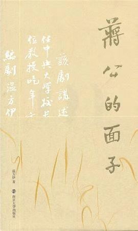
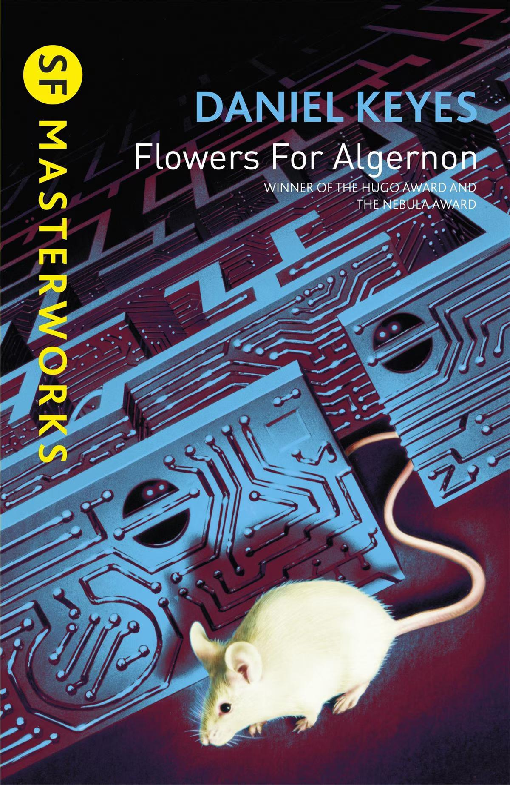
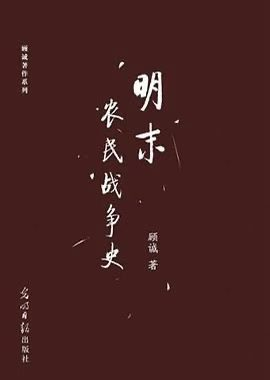
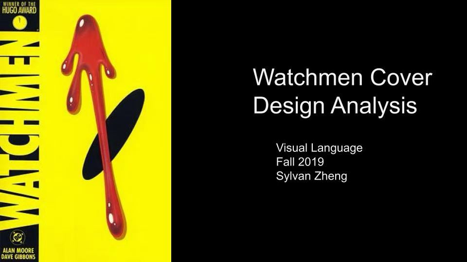

五月读书小记
wild magic read

蒋公的面子
《蒋公的面子》
5 月 1 号去看了话剧，演出很精彩，好看得超出预期。评价为——更适合中国宝宝的《等待戈多》。
作者的台词写得相当精妙，全场看下来没有一丝分神。故事讲的是 1943 年抗战时期，蒋介石设宴邀约三位国立中央大学的教授赴宴。三位主角各有各的动机和立场，各自推动或阻碍着自己是否要前去赴老蒋的宴。
去了还是没去，这是一个问题。
wild magic read

蒋公5 月 1 号去看了话剧，演出很精彩，好看得超出预期。评价为——更适合中国宝宝的《等待戈多》。
作者的台词写得相当精妙，全场看下来没有一丝分神。故事讲的是 1943 年抗战时期，蒋介石设宴邀约三位国立中央大学的教授赴宴。三位主角各有各的动机和立场，各自推动或阻碍着自己是否要前去赴老蒋的宴。
去了还是没去，这是一个问题。

献给讲述一位智力障碍者查理接受智力治疗后发生的故事，采用日记体形式。他的智商从懵懂无知飞速飙升为远超常人的天才。而我喜欢作者所描述的查理经历的"成长的烦恼"——那种把过去的经历在某个时间点突然闪回，作为思考的资料进行反刍，后知后觉地意识到自己当时遇到了什么的感觉。
作者的细节处理相当到位。查理的日记从错别字连篇的记录，逐渐变得逻辑缜密、文字深刻，就像在读一本真实的日记。每每读到查理在日记上的思考，我都深有同感。

明末顾诚先生的史料一向详实，考据严谨，时间线梳理得相当完整。从天启七年到崇祯十七年的明末农民起义始末，读起来相当有意思。在玩《历史模拟器：崇祯》的时候，看着历史剧情在手上重演，很难绷得住。
不过有一点想吐槽——作者偏向于一边倒站起义方的视角叙事，同时大量套用基于现代革命思想的理论术语来解读这场底层起义。我觉得没必要套用这么多术语来描述一个不曾受过革命纲领与思想启蒙的反抗。人生存的本能萌发的动力，并不比受系统思想指导的革命动力卑微。在当时有当时的生产关系与社会环境，分析历史应该从各阶级各类人群的详细动机出发，而不是一个笼统的"反动的"就能概括。尊重对手也是尊重自己。
总的来说是一本很有意思的书，看完了可以接续《南明史》。

守望者故事讲述独行义警罗夏察觉有人在猎杀昔日守望者成员，遂逐一联络隐退的过去的同伴。
严肃题材的超英反思漫画，比同类的《黑袍纠察队》更严肃一点。同样展现出超英也有普通人的爱恨情仇、自私怯懦——能力越大，欲望越大。人的底色是孤独，哪怕是无所不能的曼哈顿博士。没有人可以承担得起"偶像"二字。撕开靓丽的伪装，每个人都在渴望。